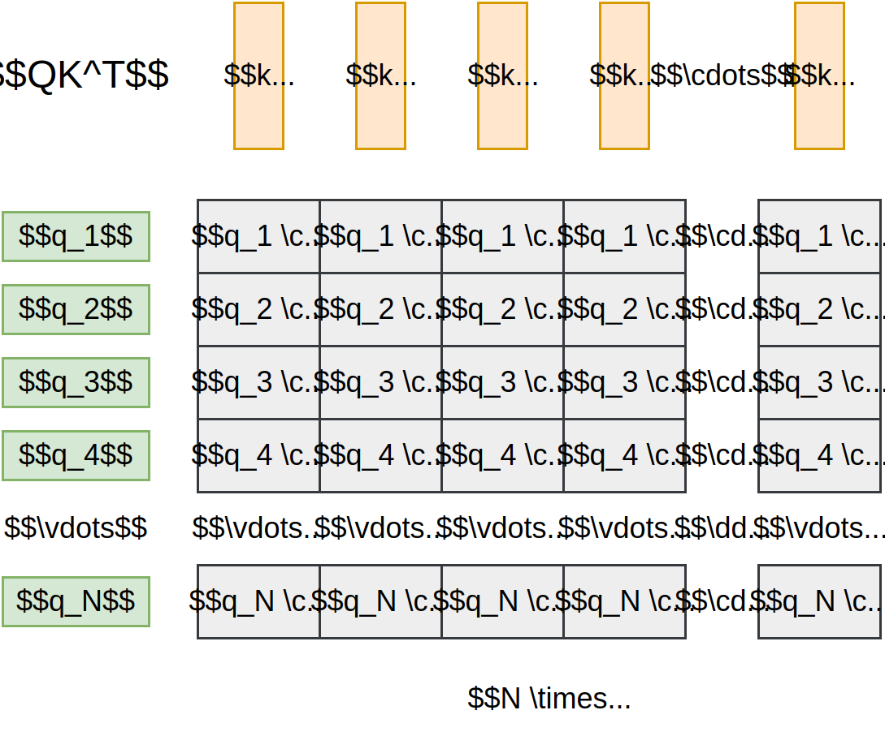

Transformers
Ping-Ting Liu, Bo-Wei LinAttention
How machine understand sentences?
Main Idea
Sharing information between tokens
Two questions to answer:
- Get information from which token?
- What information are we sharing?
Attention is all you need!
Single Head Attention Calculation
Input: a sequence of tokens
- Token: similar to a word
- Sequence length: $N$
- Embeds token in $d$-dimensional space
Output: a sequence of vectors
- Same dimensions as the input
- $a_i$: new info. for token $i$
- We update the information in $X$ by adding $A$ to $X$
Get information from which token?
- Each token asks other tokens if they got the information.
- Each token answers to the questions.
- Then we know the relationship between tokens.
Query
The question asked by the tokens.
Key
The answer provided by the tokens.
Check answers against questions
$q_i \cdot k_j$
Dot product measures the similarity in direction
Check answers against questions
Value*
Extract information with $W^V$
Converting score to distribution
Important: softmax is applied row-wise
$\alpha_{ij}$: the amount of information to pass from token $j$ to token $i$
Dot-Product Attention
Scaled Dot-Product Attention
$\text{Attention}(Q, K, V) = \text{softmax}(\frac{QK^T}{\sqrt{d_k}})V$
divided by $\sqrt{d_k}$ for numerical stability
Multi-head Attention
A head of attention
Captures a kind of information flow, it describes:
- How to extract information (values) from tokens.
- How to pass this information around
The need for multi-head
There are many kinds of information
Combining results from $h$ single-head attentions
but that's not what we see in the paper:
\[ \begin{align*} \text{MultiHead}(Q, K, V) &= \text{Concat}(\text{head}_1, \ldots, \text{head}_h)W^O \\ \text{where } \text{head}_i &= \text{Attention}(QW_i^Q, KW_i^K, VW_i^V) \end{align*} \]
What is $\text{Concat}$? What is $W^O$? And, why?
Attention Parameters*
Single-head attention parameters:
In Meta's LLaMA 3.1-70B:
- $d=8192$
- $d_k=128$
When having $h$ copies of this, $W^V$ is too large
Modified Value Calculation
In multi-head, we give value a new dimension $d_v$
This makes the output of each head $\in \mathbb{R} ^{N \times d_v}$
Actual Multi-head Attention
Attention Parameters
The parameters per head (on average):
Usually, we set $d_k = d_v = d / h$
Transformer
Transformer Overview
Transformer Block
Feed Forward Network
Extend information in tokens
Feed Forward Network
A 2-layer NN with ReLU activation
$\text{FFN}(x) = \text{max}(0, xW_1 + b_1)W_2 + b_2$
$W_1 \in \mathbb{R}^{d \times d_{ff}}, W_2 \in \mathbb{R}^{d_{ff} \times d},d_{ff} \approx 4d$
The calculation is independent among input tokens
Layer Normalization
Stabilize training
Layer Normalization
$$ \begin{align*} \mu &= \frac{1}{d} \sum_{i=1}^{d} \chi_i \\ \sigma &= \sqrt{\frac{1}{d} \sum_{i=1}^{d} (\chi_i - \mu)^2} \\ \chi_i &\leftarrow \gamma_i \frac {(\chi_i - \mu)}{\sigma} + \beta_i \end{align*} $$
$\gamma_i$ and $\beta_i$ are learnable parameters
Residual Connection
Stabilize training
Residual Connection
Residual is good for deep network
$$ \begin{align*} L_1(x) &= xW_1 + b_1\\ L_2(x) &= xW_2 + b_2\\ \end{align*} $$
$$ \begin{align*} &y = L_2(L_1(x))\\ &y_{res} = L_2(L_1(x)) + L_1(x)\\ \end{align*} $$
Why? Let's look at their gradient:
$$ \begin{align*} \frac{\partial y}{\partial W_1} &= \frac {\partial y}{\partial L_2} \frac {\partial L_2}{\partial L_1} \frac {\partial L_1}{\partial W_1}\\ \frac{\partial y_{res}}{\partial W_1} &= \underbrace{ \frac {\partial y_{res}}{\partial L_2} \frac {\partial L_2}{\partial L_1} \frac {\partial L_1}{\partial W_1} }_{\text{Vanish!}} + \frac {\partial y_{res}}{\partial L_1} \frac {\partial L_1}{\partial W_1}\\ \end{align*} $$
Masked Attention
Masked Attention
Prevent receiving information from latter tokens
Cross Attention
Mix the information from encoder to decoder
Cross Attention
Complete Transformer
Input Embedding
$E$ is learnable
Output Block

Cool animation
Thank you for your attention